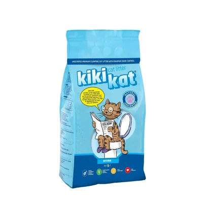
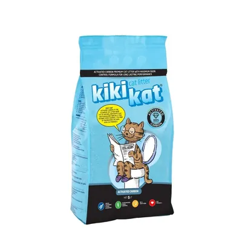
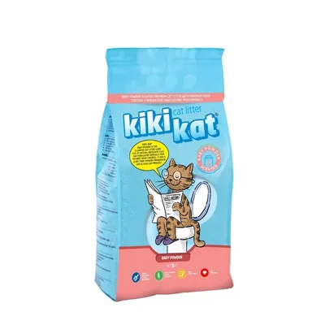

Úvod › Produkty
Produkty
Všech 6 variant je z bílého hrudkujícího bentonitu se stejnými vlastnostmi: pevné hrudky, minimum prachu, vysoká savost. Liší se vůní. Každá varianta se dodává v balení 5 l (4,35 kg) a 10 l (8,7 kg).

Natural
Bez vůně
Detail →
Activated Carbon
S aktivním uhlím
Detail →
Cleany
Jemná vůně mýdla
Detail →
Lavender Fields
Vůně levandule
Detail →
Mountain Fresh
Svěží horská vůně
Detail →
Baby Powder
Vůně dětského pudru
Detail →| Varianta | Vůně | Balení |
|---|---|---|
| Natural | bez vůně | 5 l, 10 l |
| Activated Carbon | s aktivním uhlím | 5 l, 10 l |
| Cleany | jemná vůně mýdla | 5 l, 10 l |
| Lavender Fields | vůně levandule | 5 l, 10 l |
| Mountain Fresh | svěží horská vůně | 5 l, 10 l |
| Baby Powder | vůně dětského pudru | 5 l, 10 l |
Velkoobchod: dodáváme po paletách
Kiki Kat dovážíme přímo od výrobce z Turecka. Pro prodejny, chovatelské stanice, útulky i obce dodáme celé palety.
- všech 6 variant, balení 5 l a 10 l
- dodání po paletách v rámci ČR
- dovoz přímo od výrobce
Chcete nabídku?
Napište, kolik palet a jakých variant potřebujete a kam je dovézt. Ozveme se s cenou a termínem.